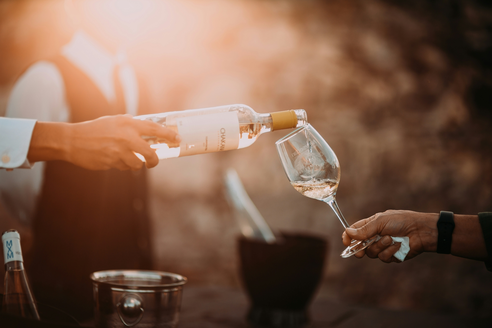

Conhecimento que aproxima
Há mais de 15 anos, a Vinheria Agnello compartilha sua paixão pelo mundo dos vinhos com quem busca qualidade, novas descobertas e um atendimento acolhedor.
Além da variedade de rótulos nacionais e internacionais, oferecemos a experiência de uma equipe que dedica tempo e cuidado a entender suas preferências e ajudar você a escolher com confiança.
Giulio, Bianca e nossos vendedores colocam esse conhecimento à sua disposição, explicando as características de cada vinho, apresentando diferentes uvas e regiões e sugerindo harmonizações para valorizar sua experiência à mesa. Seja para acompanhar um jantar, presentear alguém especial ou experimentar um novo rótulo, nossas recomendações levam em conta seu paladar, a ocasião e quanto você deseja investir.
Para nós, conhecer vinhos deve ser uma experiência prazerosa, sem complicações. Por isso, você não precisa entender de uvas, safras ou métodos de produção para conversar com a nossa equipe: estamos aqui para esclarecer suas dúvidas e ajudar você a descobrir o que mais gosta.
Agora, esse mesmo cuidado também está disponível pelo nosso site, por meio de uma consultoria especializada e totalmente gratuita. Conte um pouco sobre o que procura e deixe que nossa experiência ajude você a encontrar o vinho para o seu próximo momento especial.

Como funciona a nossa consultoria
- Entre em contato - Nossa equipe especializada está à disposição para tirar suas dúvidas e ajudar você a encontrar o vinho ideal para cada ocasião.
- Compartilhe suas preferêcias - Fale sobre seu paladar, gostos, cadápio e quanto deseja investir.
- Conheça nossas sugestões - Indicamos rótulos que mais combinam com o que você procura.
- Escolha com confiança - Você decide com segurança qual será o melhor tipo para a ocasião.
Pra quem seria essa consultoria?
Sabemos que a maioria das pessoas que compram vinhos ainda estão descobrindo esse mundo, e que muitas vezes podem surgir diversas dúvidas na hora de escolher a garrafa certa.
Por isso nossa consultoria é indicada para:
- Quem está começando a conhecer o universo dos vinhos e não sabe por onde começar.
- Quem vai receber visitas para um almoço e jantar e não deseja fazer a escolha errada.
- Quem está organizando uma comemoração ou evento e precisa de sugestões que agrade os convidados.
- Quem quer entender melhor sobre uvas e vinícolas.
Quer aprender mais sobre vinhos?
O mundo dos vinhos está cheio de detalhes que tornam cada descoberta especial. A cor, os aromas e os sabores de uma taça podem despertar diferentes sensações, e aprender a percebê-los ajuda você a conhecer melhor o próprio paladar. Não é preciso ser especialista para começar: a curiosidade e a atenção a cada experiência já são um ótimo primeiro passo. Degustar vai além de provar. É observar a bebida, explorar seus aromas e perceber como ela se apresenta na boca, descobrindo aos poucos quais características mais agradam você. Com o tempo, fica mais fácil comparar estilos, expressar suas preferências e se aventurar por novos rótulos. Para continuar essa descoberta, confira o artigo da Salton sobre degustação de vinhos. Um convite para ampliar seus conhecimentos e apreciar sua próxima taça com um novo olhar. Confira as dicas de degustação da Salton.
Explore o mundo dos vinhosPerguntas frequentes:
Preciso entender de vinhos para participar?
Não! A maior parte das pessoas que procuram por nossa consultoria está descobrindo o assunto aos poucos, é exatamente por esse motivo que ela existe.
A consultoria tem algum custo?
Não, a consultoria é gratuita, assim como na loja física.
Posso pedir sugestões para acompanhar um prato específico?
Sim! Conte o cardápio ou o tipo de refeição e nossa equipe recomenda uma harmonização para você